1 安装 Node.js 环境
Claude Code 需要 Node.js 环境才能运行。请按照以下步骤安装 Node.js：
下载 Node.js
打开浏览器访问 https://nodejs.org/，点击 "LTS" 版本进行下载。
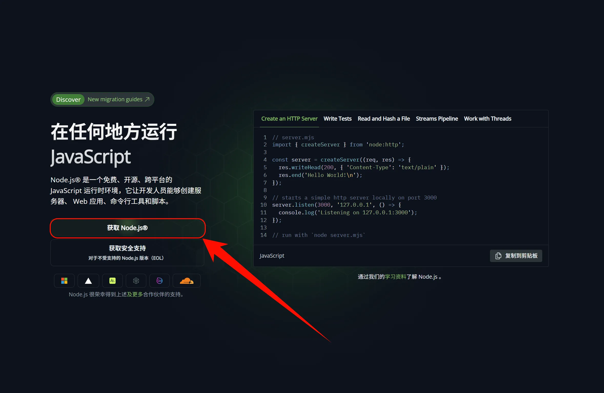
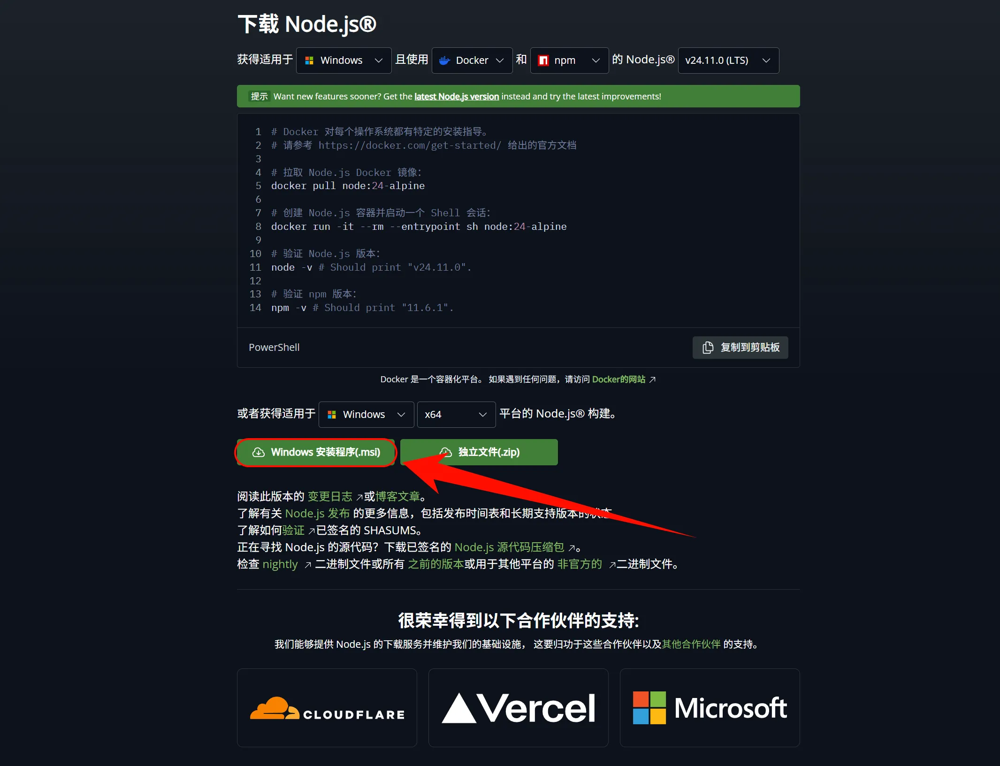
安装 Node.js
下载完成后双击 .msi 文件，按照安装向导完成安装。
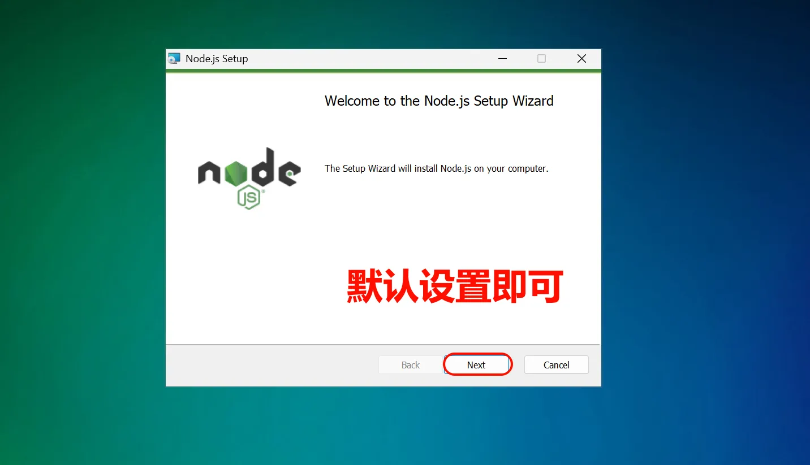
验证安装
打开 PowerShell，运行以下命令验证安装是否成功：
node --version
npm --version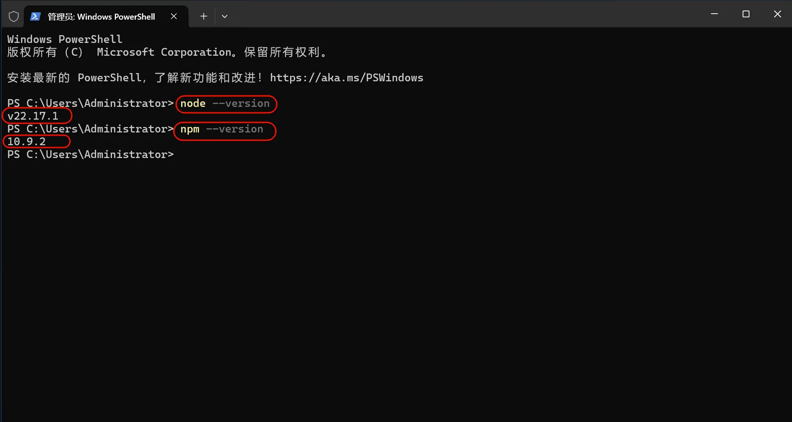
- 建议使用 PowerShell 而不是 CMD
- 如果遇到权限问题，尝试以管理员身份运行
- 某些杀毒软件可能会误报，请添加信任
2 安装 Git Bash
Windows 环境下需要使用 Git Bash 安装 Claude Code。安装完成后，环境变量设置和使用仍在 PowerShell 或 CMD 中。
下载 Git
访问 https://git-scm.com/downloads/win 下载 Git for Windows。
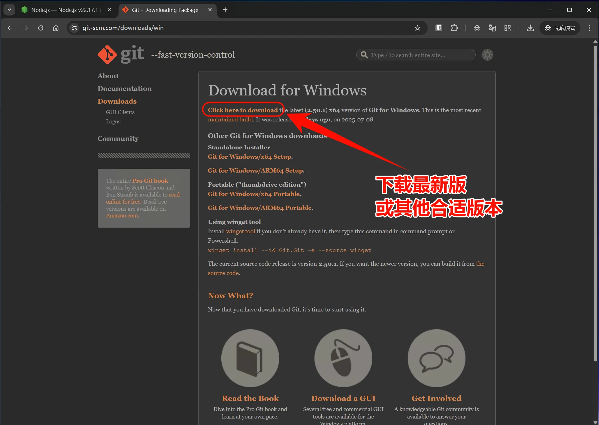
安装 Git
下载完成后运行安装程序，按照默认设置完成安装即可。
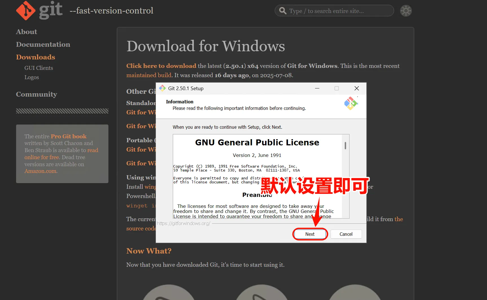
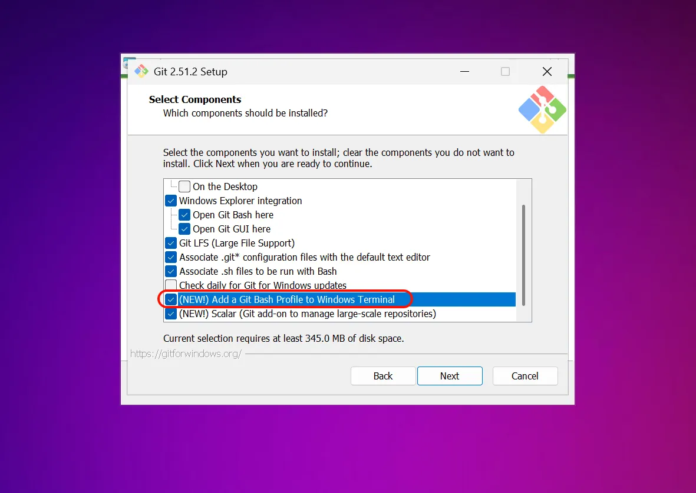
验证安装
git --version3 安装 Claude Code
打开 PowerShell，运行以下命令安装 Claude Code：
npm install -g @anthropic-ai/claude-code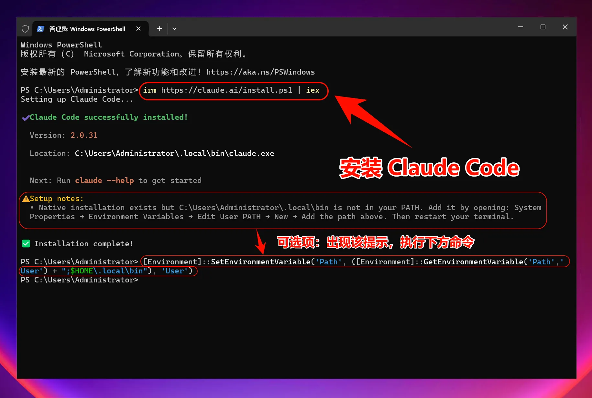
如果安装过程中提示需要将 ~/.local/bin 加入 PATH，请运行：
[Environment]::SetEnvironmentVariable('Path', ([Environment]::GetEnvironmentVariable('Path','User') + ";$HOME\.local\bin"), 'User')验证安装
claude --version4 获取 API Key
在设置环境变量之前，你需要先获取一个 API Key。这是连接中转服务的"通行证"。
1. 打开浏览器访问 api.augmentproxy.top
访问 https://api.augmentproxy.top
2. 点击"注册"创建账号
如果还没有账号，点击页面上的"注册"按钮创建一个新账号。
3. 登录后，在左侧菜单找到"令牌"
登录成功后，在左侧导航菜单中找到并点击"令牌"选项。
4. 点击"添加新的令牌"，填写名称，点击提交
点击"添加新的令牌"按钮，输入一个便于识别的名称（如"Claude Code"），然后点击提交。
5. 复制生成的 API Key（以 sk- 开头）
令牌创建成功后，页面会显示一个以 sk- 开头的密钥，点击复制按钮将其保存。
5 设置环境变量
为了让 Claude Code 连接到中转服务，需要将 ANTHROPIC_BASE_URL 设置为：
https://api.augmentproxy.top方式一：一键设置推荐
运行以下命令，按提示输入上述地址和你的 API Key 即可自动完成配置：
iex (irm 'https://raw.githubusercontent.com/QuantumNous/new-api-docs/refs/heads/main/helper/claude-cli-setup.ps1')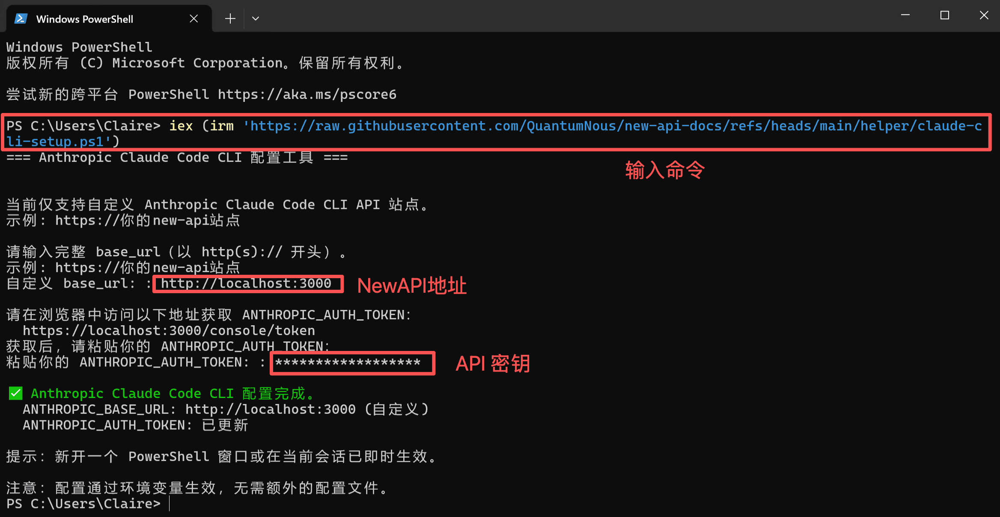
方式二：手动设置（点击展开）
临时设置（仅当前会话有效）
$env:ANTHROPIC_BASE_URL = "https://api.augmentproxy.top"
$env:ANTHROPIC_AUTH_TOKEN = "your_api_key"永久设置（推荐）
[System.Environment]::SetEnvironmentVariable("ANTHROPIC_BASE_URL", "https://api.augmentproxy.top", [System.EnvironmentVariableTarget]::User)
[System.Environment]::SetEnvironmentVariable("ANTHROPIC_AUTH_TOKEN", "your_api_key", [System.EnvironmentVariableTarget]::User)echo $env:ANTHROPIC_BASE_URL，如果输出 https://api.augmentproxy.top，说明环境变量设置成功！
6 开始使用 Claude Code
启动 Claude Code
claude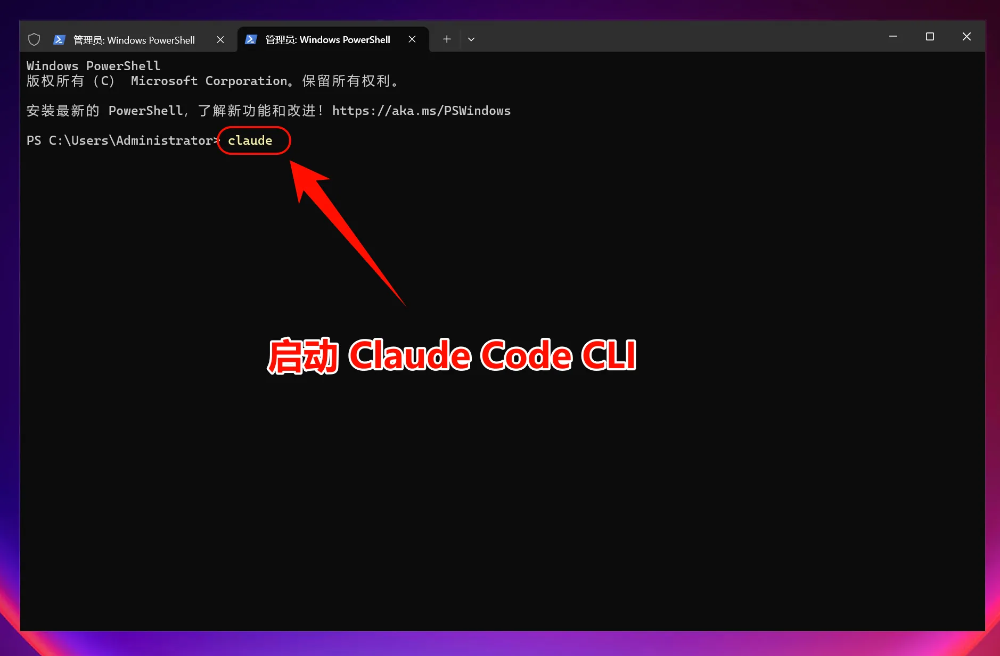
在项目中使用
cd C:\path\to\your\project
claude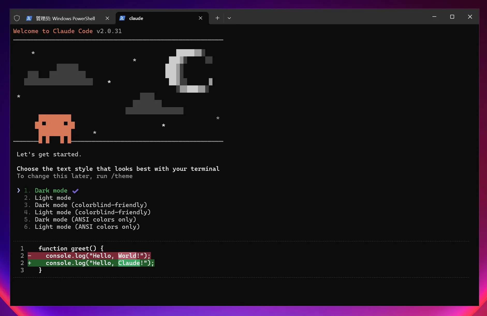
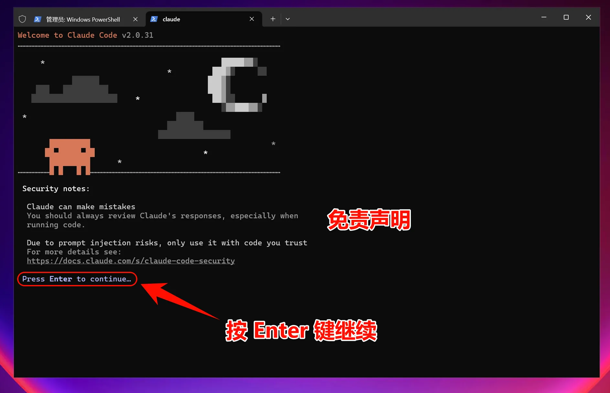
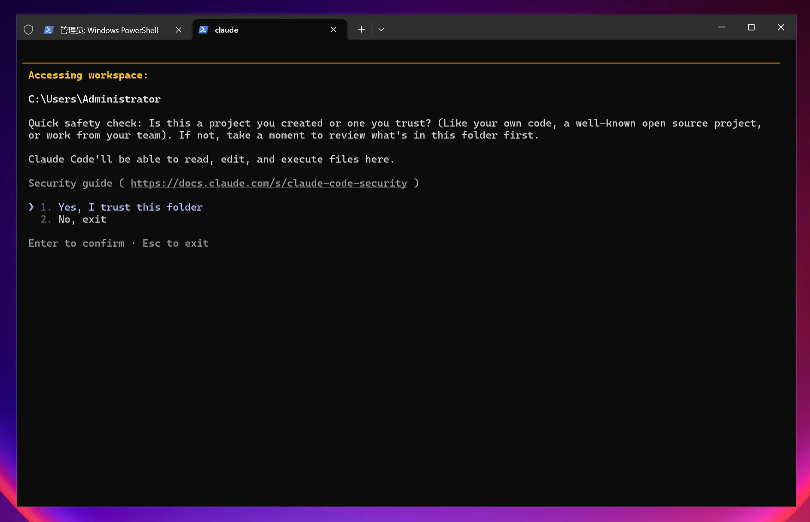
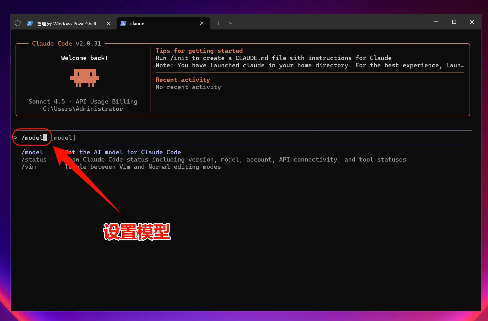
选择模型
在 Claude Code 中输入 /model 命令来选择不同的模型：
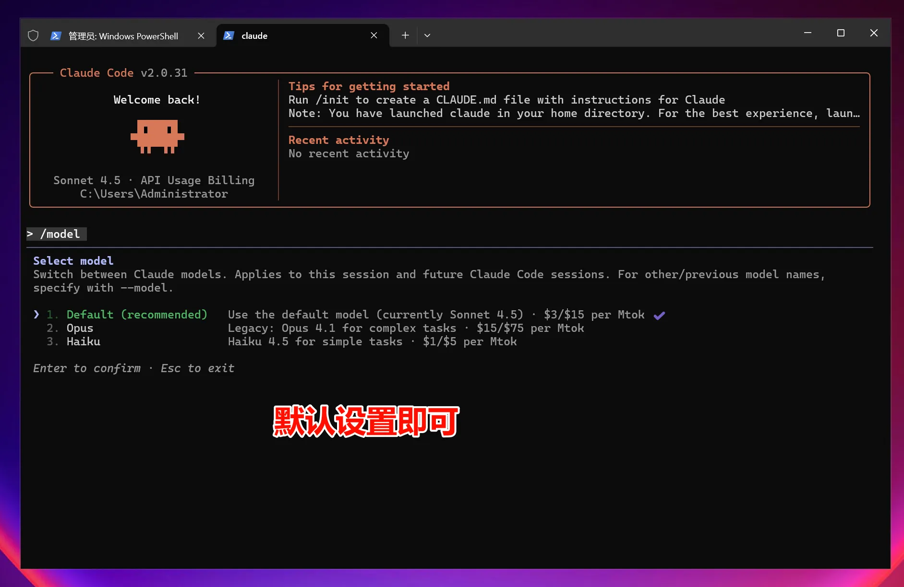
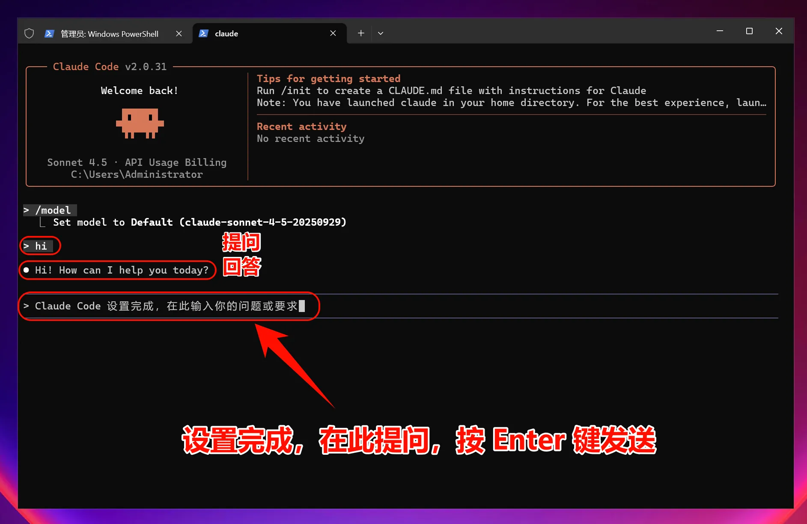
常见问题
终端（Terminal）和 PowerShell 是电脑上的命令行工具，可以通过输入文字命令来操作电脑。你可以把它想象成"用打字代替点击"的操作方式。
Windows 打开方式：按 Win + X，选择"Windows PowerShell"或"终端"；或在开始菜单搜索"PowerShell"。
macOS 打开方式：按 Cmd + 空格，输入"终端"或"Terminal"，回车打开。
API Key 就像是你的"通行证"或"门禁卡"。当你使用 Claude Code 等工具时，需要用 API Key 来证明你的身份，这样服务器才知道是你在使用服务，并从你的账户扣费。每个人的 API Key 都是唯一的，以 sk- 开头。
中转服务只做请求转发，不存储你的对话数据和代码内容。你的请求通过中转服务器转发到 AI 模型提供商（如 Anthropic），响应结果直接返回给你。整个过程使用 HTTPS 加密传输，确保数据安全。
访问 api.augmentproxy.top，登录后在左侧菜单找到"钱包"或"充值"页面，按照提示完成充值即可。充值后额度实时到账，无需重启工具。
以管理员身份运行 PowerShell，或者修改 npm 全局安装路径：
# 设置 npm 全局安装路径到用户目录
npm config set prefix "$env:USERPROFILE\\.npm-global"
# 添加到 PATH
[Environment]::SetEnvironmentVariable("PATH", "$env:PATH;$env:USERPROFILE\.npm-global", "User")如果遇到脚本执行策略限制，以管理员身份运行：
Set-ExecutionPolicy -ExecutionPolicy RemoteSigned -Scope CurrentUser- 确保使用
[Environment]::SetEnvironmentVariable设置永久变量 - 关闭并重新打开终端窗口
- 验证设置：
echo $env:ANTHROPIC_AUTH_TOKEN - 如仍不生效，尝试注销并重新登录 Windows
在 .claude 同级目录下的 .claude.json 文件里加一行：
"hasCompletedOnboarding": true1 安装 Claude Code CLI
打开终端
在 macOS 中打开"终端"应用程序。
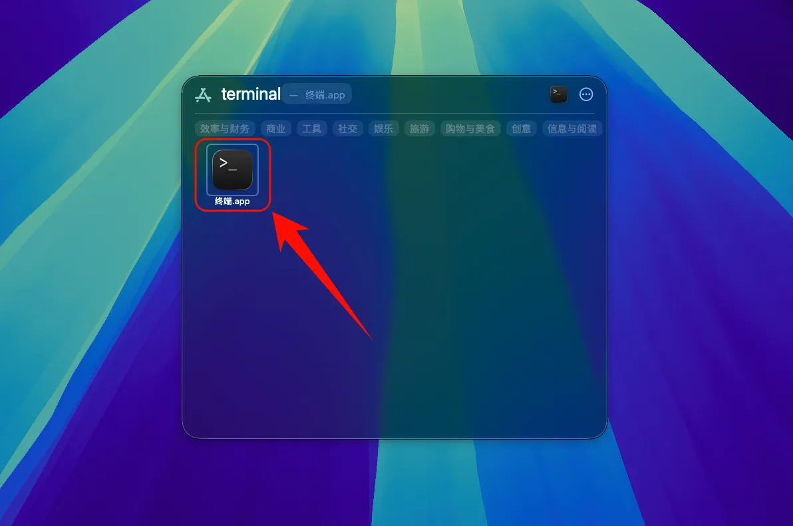
安装 Claude Code
在终端中运行以下命令：
curl -fsSL https://claude.ai/install.sh | bash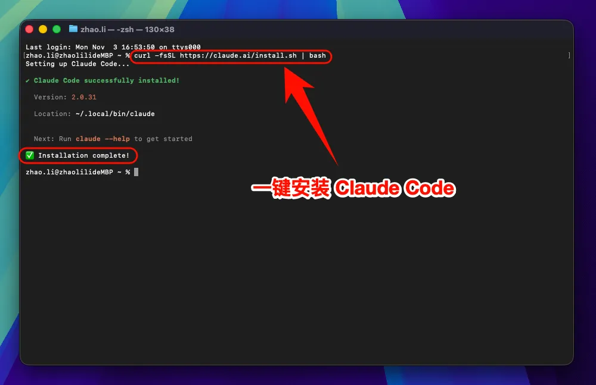
如果需要将 Claude Code 添加到 PATH，可以运行：
echo 'export PATH="$HOME/.local/bin:$PATH"' >> ~/.bashrc && source ~/.bashrc验证安装
claude --version2 获取 API Key
在设置环境变量之前，你需要先获取一个 API Key。这是连接中转服务的"通行证"。
1. 打开浏览器访问 api.augmentproxy.top
访问 https://api.augmentproxy.top
2. 点击"注册"创建账号
如果还没有账号，点击页面上的"注册"按钮创建一个新账号。
3. 登录后，在左侧菜单找到"令牌"
登录成功后，在左侧导航菜单中找到并点击"令牌"选项。
4. 点击"添加新的令牌"，填写名称，点击提交
点击"添加新的令牌"按钮，输入一个便于识别的名称（如"Claude Code"），然后点击提交。
5. 复制生成的 API Key（以 sk- 开头）
令牌创建成功后，页面会显示一个以 sk- 开头的密钥，点击复制按钮将其保存。
3 设置环境变量
为了让 Claude Code 连接到中转服务，需要将 ANTHROPIC_BASE_URL 设置为：
https://api.augmentproxy.top方式一：一键设置推荐
运行以下命令，按提示输入上述地址和你的 API Key 即可自动完成配置：
curl -fsSL https://raw.githubusercontent.com/QuantumNous/new-api-docs/refs/heads/main/helper/claude-cli-setup.sh | bash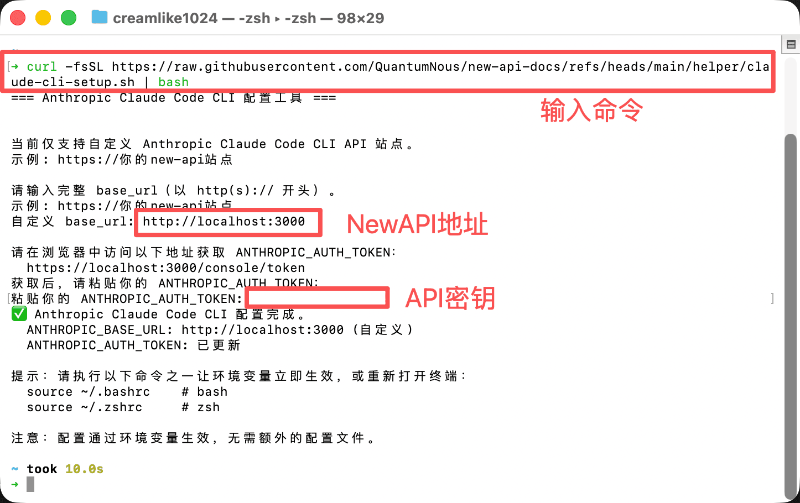
方式二：手动设置（点击展开）
临时设置（仅当前会话有效）
export ANTHROPIC_BASE_URL="https://api.augmentproxy.top"
export ANTHROPIC_AUTH_TOKEN="your_api_key"永久设置（推荐）
# 添加到 ~/.zshrc（zsh 用户）或 ~/.bashrc（bash 用户）
echo 'export ANTHROPIC_BASE_URL="https://api.augmentproxy.top"' >> ~/.zshrc
echo 'export ANTHROPIC_AUTH_TOKEN="your_api_key"' >> ~/.zshrc
# 使配置生效
source ~/.zshrcecho $ANTHROPIC_BASE_URL，如果输出 https://api.augmentproxy.top，说明环境变量设置成功！
4 开始使用 Claude Code
启动 Claude Code
claude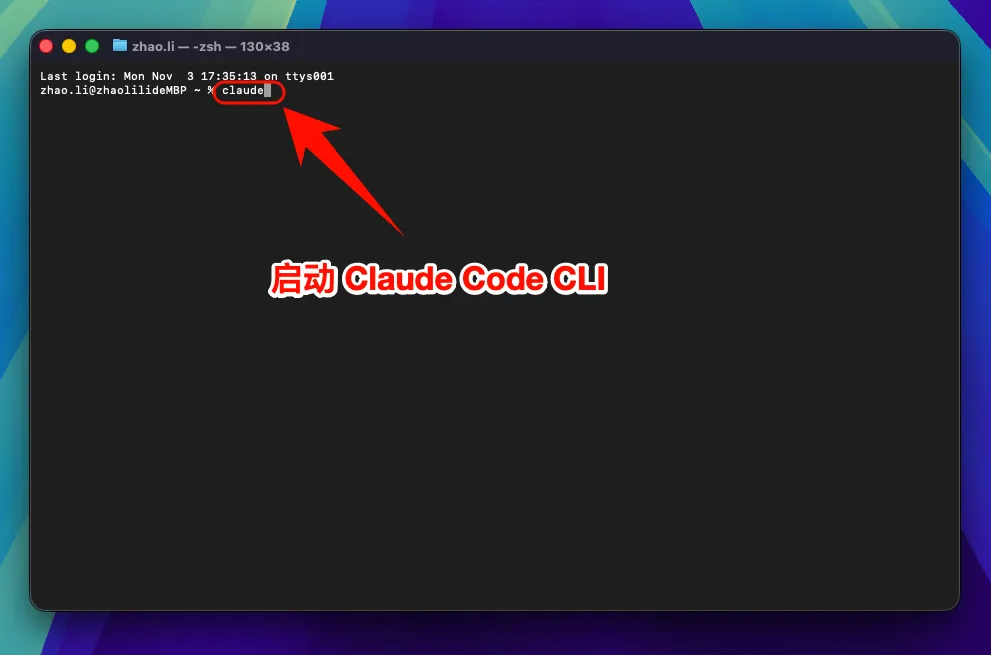
在项目中使用
cd /path/to/your/project
claude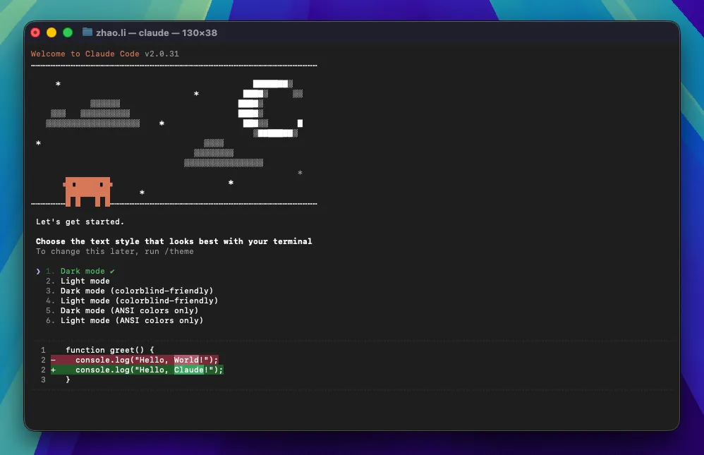
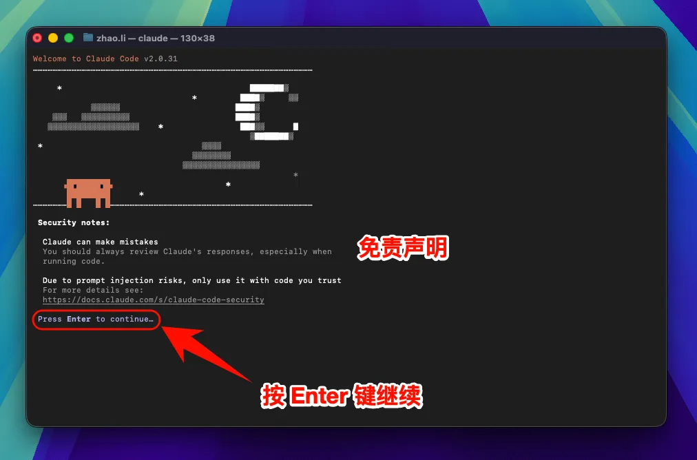
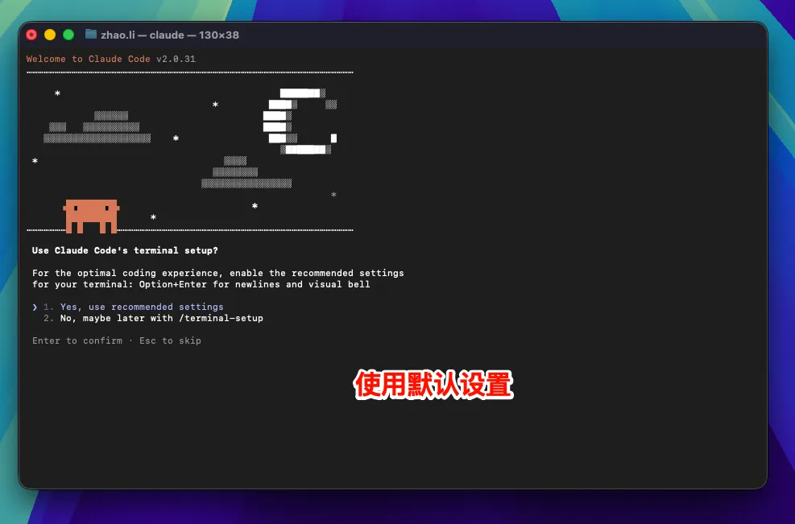
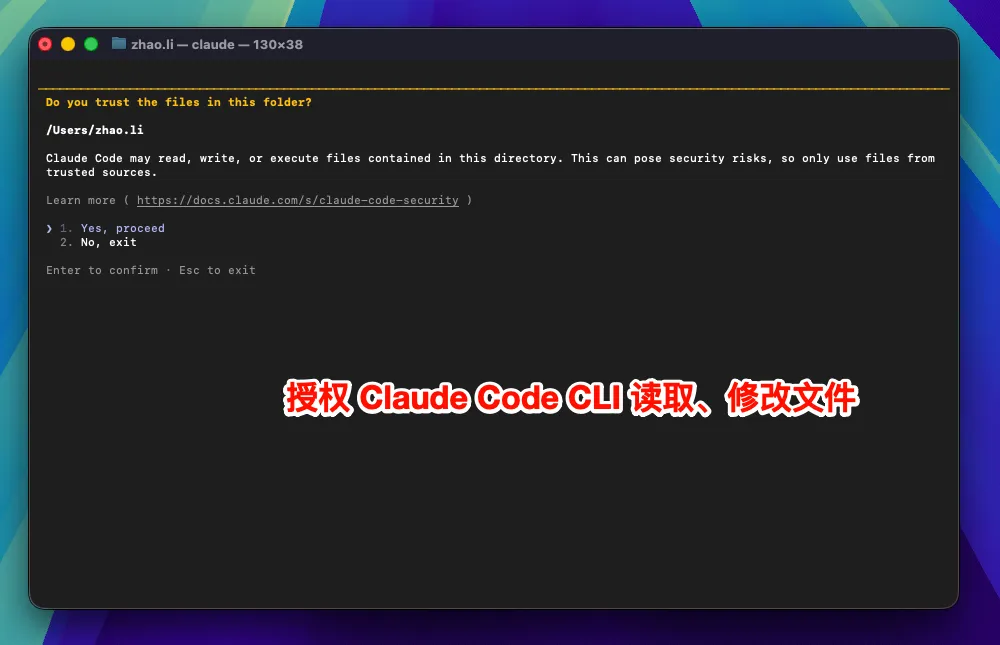
选择模型
在 Claude Code 中输入 /model 命令来选择不同的模型：
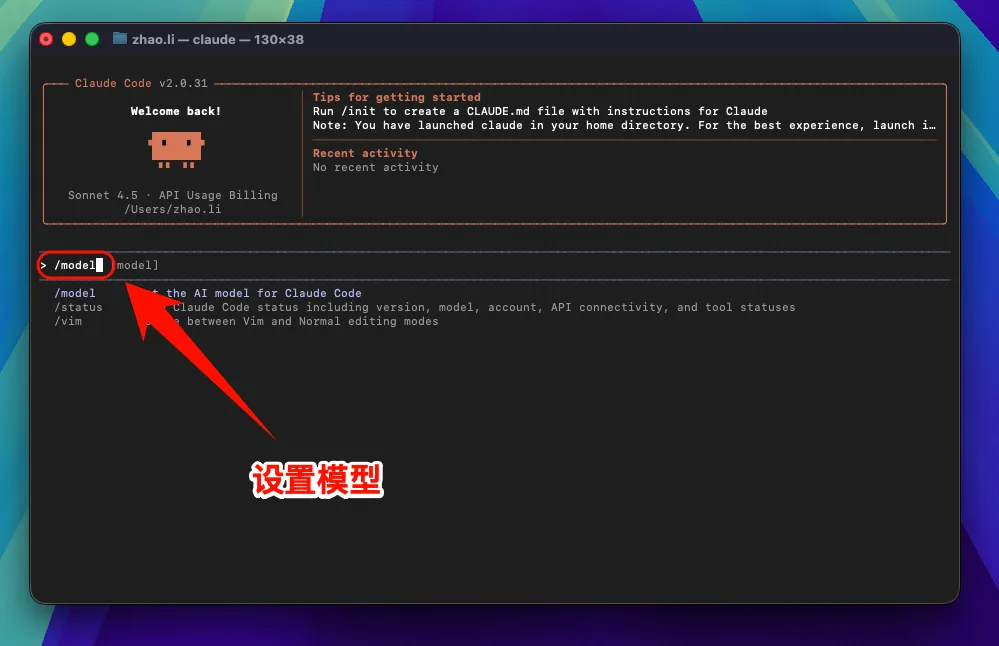
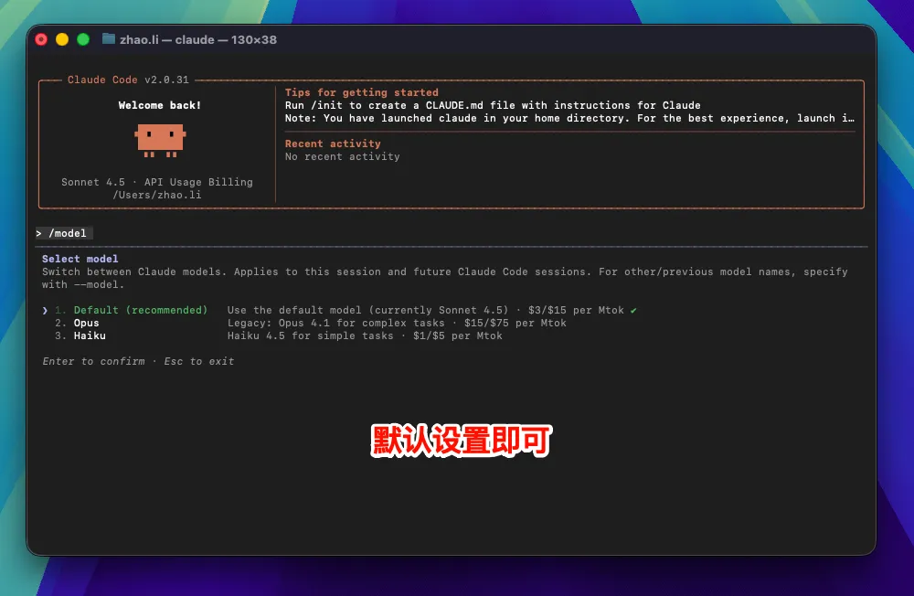
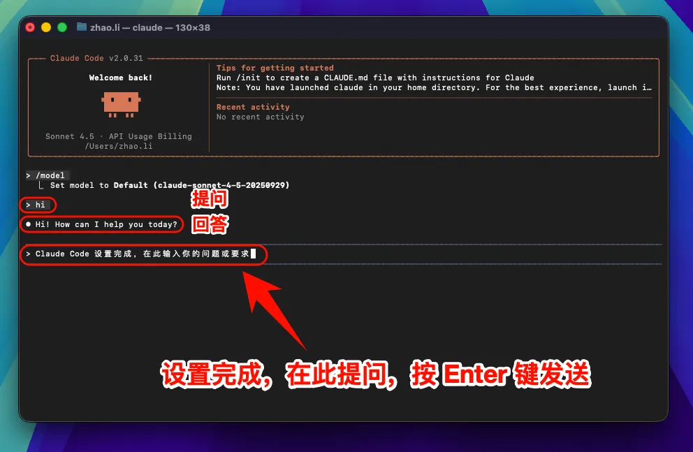
常见问题
终端（Terminal）是 macOS 上的命令行工具。按 Cmd + 空格，输入"终端"或"Terminal"，回车即可打开。
API Key 就像是你的"通行证"。使用 Claude Code 时需要用它来验证身份，以 sk- 开头，每个人的都是唯一的。
中转服务只做请求转发，不存储你的对话数据和代码内容。整个过程使用 HTTPS 加密传输。
访问 api.augmentproxy.top，登录后在左侧菜单找到"钱包"或"充值"页面完成充值即可。
如果 macOS 安全设置阻止运行 Claude Code，可以尝试以下方法：
- 打开"系统偏好设置" → "安全性与隐私"
- 点击"仍要打开"或"允许"
- 或者在终端中运行以下命令：
sudo spctl --master-disable1 安装 Claude Code
打开终端，运行以下命令安装 Claude Code：
curl -fsSL https://claude.ai/install.sh | bash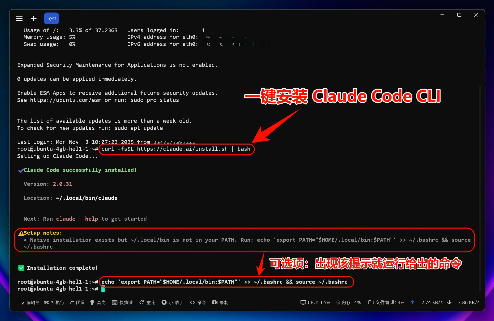
如果遇到权限问题，可以使用 sudo：
sudo curl -fsSL https://claude.ai/install.sh | bash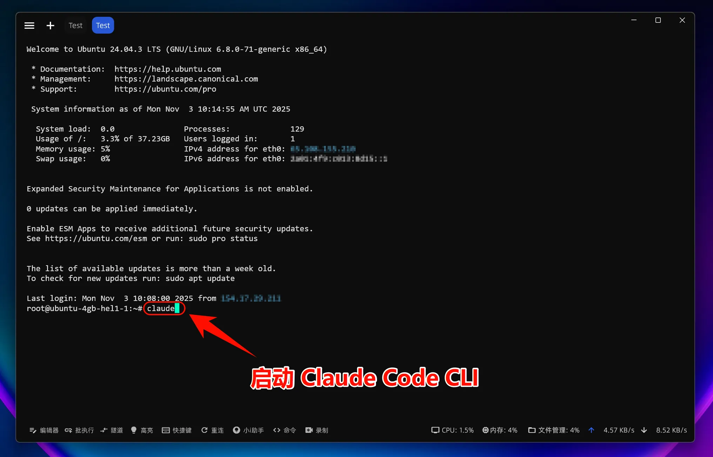
验证安装
claude --version2 获取 API Key
在设置环境变量之前，你需要先获取一个 API Key。这是连接中转服务的"通行证"。
1. 打开浏览器访问 api.augmentproxy.top
访问 https://api.augmentproxy.top
2. 点击"注册"创建账号
如果还没有账号，点击页面上的"注册"按钮创建一个新账号。
3. 登录后，在左侧菜单找到"令牌"
登录成功后，在左侧导航菜单中找到并点击"令牌"选项。
4. 点击"添加新的令牌"，填写名称，点击提交
点击"添加新的令牌"按钮，输入一个便于识别的名称（如"Claude Code"），然后点击提交。
5. 复制生成的 API Key（以 sk- 开头）
令牌创建成功后，页面会显示一个以 sk- 开头的密钥，点击复制按钮将其保存。
3 设置环境变量
为了让 Claude Code 连接到中转服务，需要将 ANTHROPIC_BASE_URL 设置为：
https://api.augmentproxy.top方式一：一键设置推荐
运行以下命令，按提示输入上述地址和你的 API Key 即可自动完成配置：
curl -fsSL https://raw.githubusercontent.com/QuantumNous/new-api-docs/refs/heads/main/helper/claude-cli-setup.sh | bash方式二：手动设置（点击展开）
临时设置（仅当前会话有效）
export ANTHROPIC_BASE_URL="https://api.augmentproxy.top"
export ANTHROPIC_AUTH_TOKEN="your_api_key"永久设置（推荐）
# 添加到 ~/.bashrc 或 ~/.profile
echo 'export ANTHROPIC_BASE_URL="https://api.augmentproxy.top"' >> ~/.bashrc
echo 'export ANTHROPIC_AUTH_TOKEN="your_api_key"' >> ~/.bashrc
# 使配置生效
source ~/.bashrcecho $ANTHROPIC_BASE_URL，如果输出 https://api.augmentproxy.top，说明环境变量设置成功！
4 开始使用 Claude Code
启动 Claude Code
claude在项目中使用
cd /path/to/your/project
claude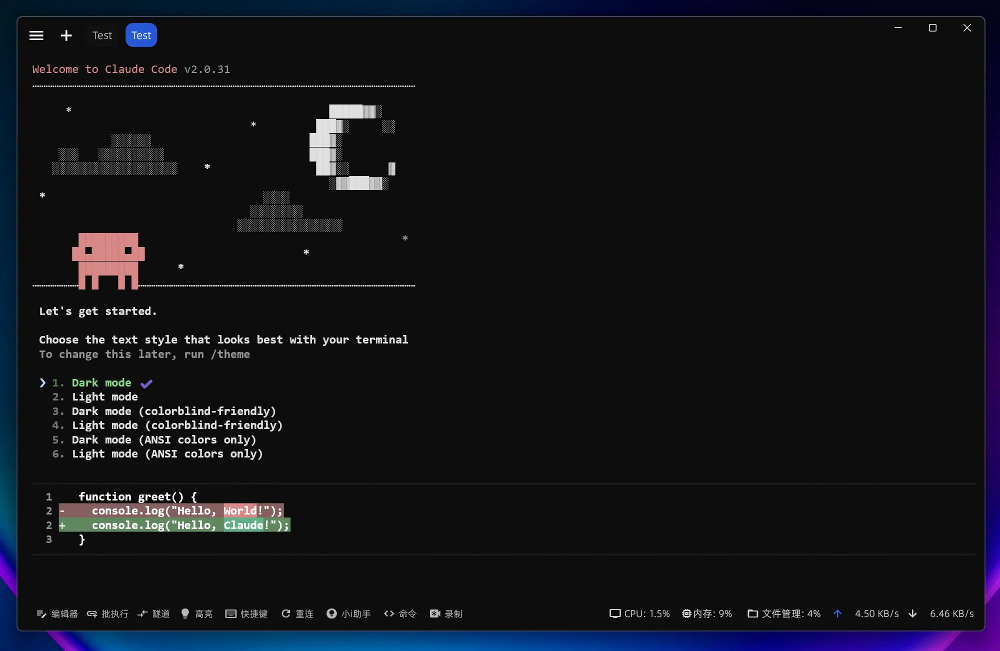
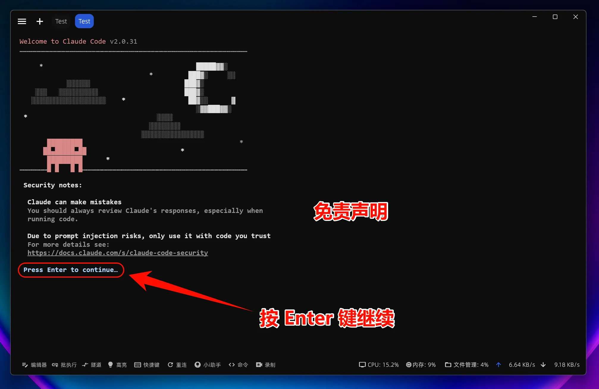
选择模型
在 Claude Code 中输入 /model 命令来选择不同的模型：
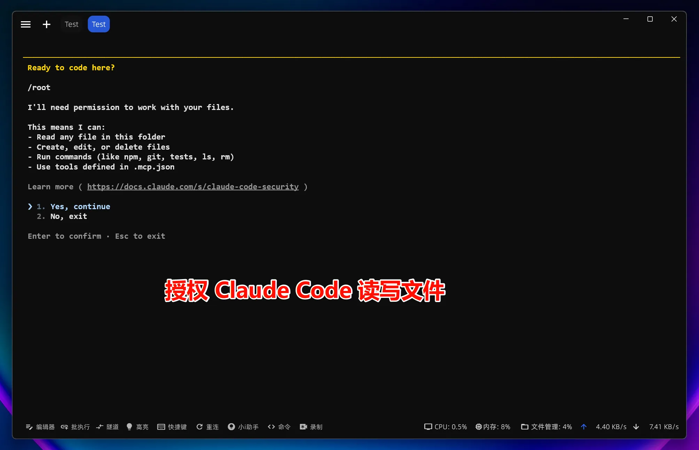
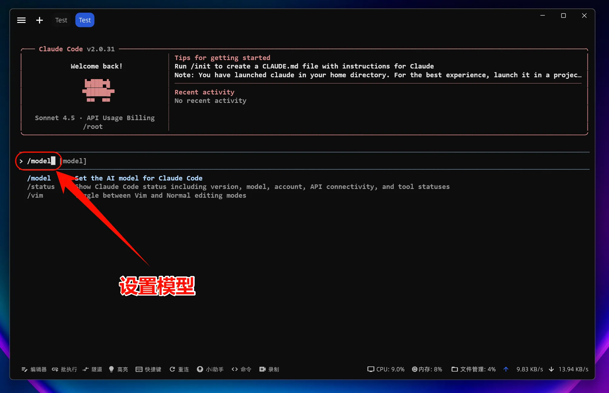
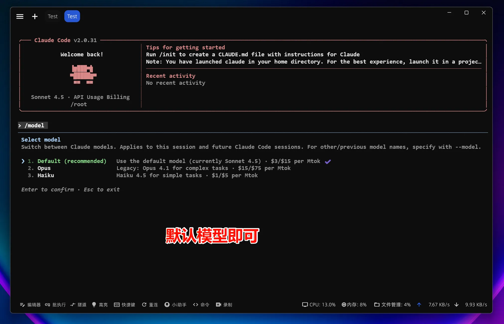
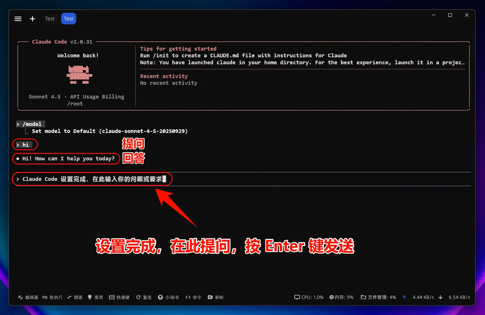
常见问题
终端（Terminal）是 Linux 上的命令行工具。大多数 Linux 桌面环境可以通过 Ctrl + Alt + T 快捷键打开终端。
API Key 就像是你的"通行证"。使用 Claude Code 时需要用它来验证身份，以 sk- 开头，每个人的都是唯一的。
中转服务只做请求转发，不存储你的对话数据和代码内容。整个过程使用 HTTPS 加密传输。
访问 api.augmentproxy.top，登录后在左侧菜单找到"钱包"或"充值"页面完成充值即可。
根据你的 Linux 发行版安装必要的开发工具：
# Ubuntu/Debian
sudo apt install build-essential
# CentOS/RHEL
sudo dnf groupinstall "Development Tools"请检查以下几点：
- 确认修改了正确的配置文件（
.bashrc或.zshrc） - 重新启动终端或运行
source ~/.bashrc - 验证设置是否生效：
echo $ANTHROPIC_BASE_URL